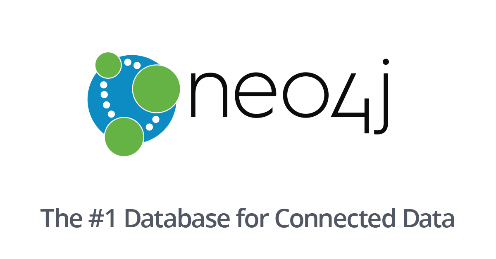

Daniel Tang
Software Developer
Computer Scientist, Musician, Fitness Enthusiast
- 1601 Rice Boulevard
- +503 855 7148
- dt19@rice.edu
Skills

HTML/CSS
I have experience with HTML/CSS in creating simple frontend UIs.
Projects Utilizing HTML/CSS: Daniel Tang Personal Portfolio (2019), Financial Simulator at HackRice 8 (2018), Application Time Analyzer at JPMorgan Chase & Co. Global Hackathon (2019), Sentiment Analysis for Yelp Reviews: Star Prediction (2019)
Python Flask Microframework
I've created numerous websites using the Python Flask Microframework to integrate frontend UIs built in HTML/CSS/JS with Python Backend code.
Projects Utilizing Flask: Financial Simulator at HackRice 8 (2018), Application Time Analyzer at JPMorgan Chase & Co. Global Hackathon (2019), Sentiment Analysis for Yelp Reviews: Star Prediction (2019)
ReactJS
I have limited experience in ReactJS. I know basic concepts like how to create and organize components or props.
Projects Utilizing ReactJS: TODO List App (2019)
Python
I have three years of experience with the Python Programming Language. I am fluent in Python syntax and in writing pythonic code. I am also fluent in using the numpy, sklearn, pandas and matplotlib packages. I've utilized Python in implementing data structures like binary search trees, queues, and stacks. Similarly, I've implemented algorithms for graph traversals, dynamic programming and machine learning.
Projects in Python I'm Most Proud Of: Sentiment Analysis for Yelp Reviews: Star Prediction (2019), Part of Speech Labeling with Viterbi (2019), DNA Sequence Alignment (2019), Rooted Directed Minimum Spanning Trees for Network Analysis (2019), Weather Prediction in Houston (2019), Graph Traversals for Shortest Path Mapping (2018).
Java
I first learned Java in 2016 when I took AP Computer Science in High School. Since then, I've used Java for object oriented programming and systems architecture in my internship at JPMorgan Chase & Co. Additionally, I am fluent in fully functional Java using VAVR.io.
Projects in Java I'm Most Proud Of (most are built from scratch): Middle Office Trading Allocation App (JPMorgan Chase, 2019), Functional Treap (2019), Recursive Top-Down JSON Parser (2019), Pretty Pictures: Mutating and Crossbreeding JSON Encoded Pictures (2019)
C
I first learned C in the summer of 2018, when I took Harvard's online CS50 course. Since, then I've used C in arduino programming. I will be learning more on C in Spring 2020, in my systems architecture class.
PySpark
I learned PySpark with the goal of producing highly parellizable code in the intention of processing big data rapidly. I used PySpark in association with multiple machine learning models, Hadoop, and AWS.
My Favorite PySpark Projects: TFIDF Logistic Regression for Distinguishing Wikipedia Articles from Australian Court Cases (2019), K Nearest Neighbors for Classifying Articles on Genre (2019)

Declarative/Imperative SQL
I have 2 years of experience in Declarative SQL, specifically PosgreSQL. I'm familiar with accumulations, joins, and subqueries for simple queries, for complex calculations like computing Jaccard Indices, and for simple design features like utilizing Data Warehouses.
I have half a year of experience in Imperative PosgreSQL. I am familiar with Imperative SQL functionalities such as cursors, and typecasting.
Projects in SQL I'm Most Proud of : Data Warehouses for Ice Cream Truck Management (2019), Consulting for Dog Intake Facilities in Houston (2019)
MongoDB
I'm familiar with MongoDB for JSON formatted database queries. I am familiar with the majority of MongoDB syntax such as that used in accumulations and lookups.
Favorite MongoDB Project: Live Tweet Twitter Analysis (2019)
Neo4j
I have experience in using Neo4j for graph database queries. I've used Neo4j to read in csv formatted data to populate nodes and relationships, and run various graph algorithms and queries on these data.
Favorite Neo4j Project: Rice University Residential College Distances (2019)
Entity Relationship Diagrams
I am familiar with database design through the use of entity relationship diagrams to model the relationships between various entities in a given real world database. This skill is useful in the making wise decisions in the structuring of database schema to prevent future issues with bad design.
Copyright © HTML5/CSS